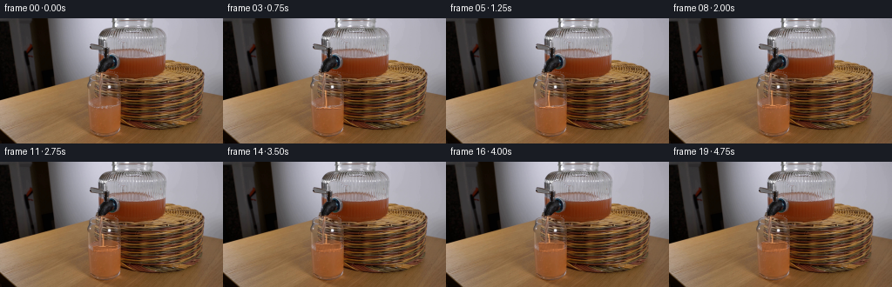
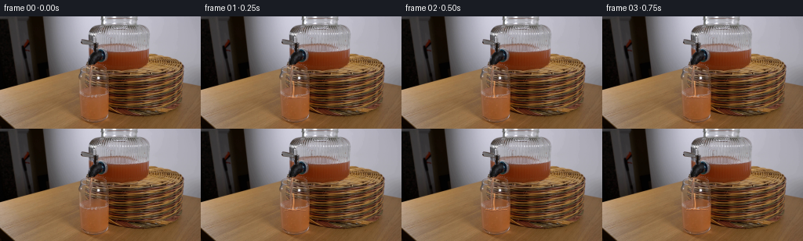
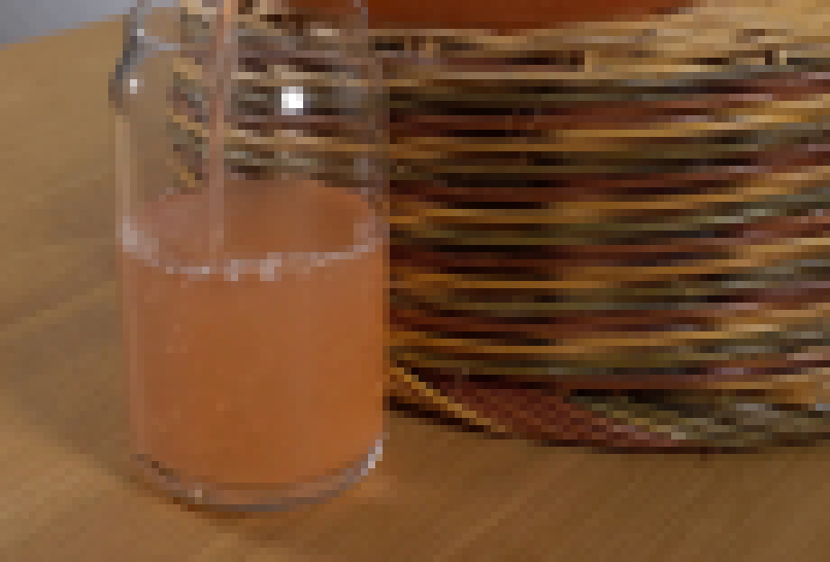
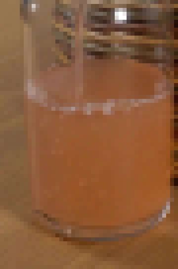
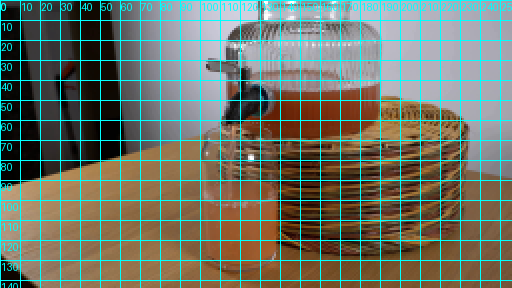
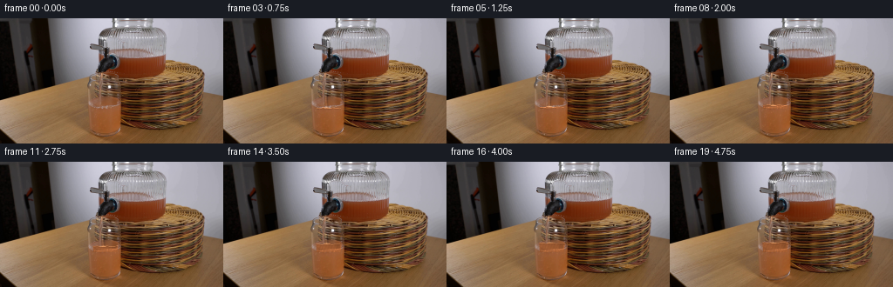
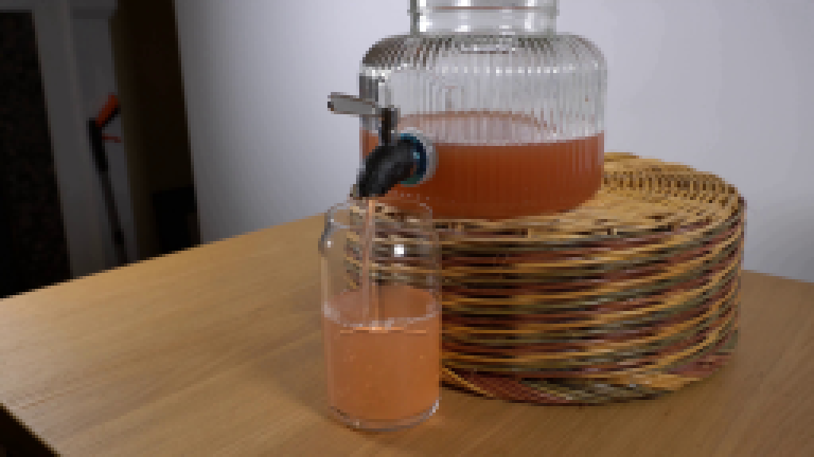

CODING AGENTS AS PIXEL WORLD MODELS
traex/DeepSeek-V4.1-Flash · 0072
点击播放 · 原生 RGB 像素
逐轮保存的候选
回放视频、检查图与代码变化。
每份候选均可单独播放。实际图片检查记录在下方工具轨迹中。
候选 01播放与检查图
点击播放 · 原生 RGB 像素


展开代码变化
--- 上一保存版本
+++ 本次保存版本
@@ -0,0 +1,186 @@
+from pathlib import Path
+
+import cv2
+import numpy as np
+from PIL import Image
+
+import artifact_io
+
+
+ROOT = Path(__file__).resolve().parent
+WIDTH, HEIGHT = 256, 144
+FRAME_COUNT = 20
+FPS = 4
+
+
+def smoothstep(value):
+ value = np.clip(value, 0.0, 1.0)
+ return value * value * (3.0 - 2.0 * value)
+
+
+def interior_edges(y):
+ """Return the inner left and right walls of the tumbler at a given row."""
+ y = np.asarray(y, dtype=np.float32)
+ left_y = np.array([83, 90, 100, 110, 120, 127, 131, 135], dtype=np.float32)
+ left_x = np.array([104.0, 104.5, 105.0, 105.5, 106.5, 108.0, 110.5, 113.5])
+ right_y = np.array([83, 90, 100, 110, 120, 127, 131, 135], dtype=np.float32)
+ right_x = np.array([137.0, 136.5, 136.0, 135.5, 134.5, 132.5, 130.0, 127.5])
+ return np.interp(y, left_y, left_x), np.interp(y, right_y, right_x)
+
+
+def luminance(rgb):
+ return rgb[..., 0] * 0.299 + rgb[..., 1] * 0.587 + rgb[..., 2] * 0.114
+
+
+def make_clean_plate(base):
+ """Remove the original stream from the clear-glass rows before re-rendering it."""
+ clean = base.astype(np.float32).copy()
+ for y in range(83, 104):
+ x0, x1 = 114, 123
+ left = clean[y, x0 - 2]
+ right = clean[y, x1 + 2]
+ for x in range(x0, x1):
+ amount = (x - x0 + 0.5) / (x1 - x0)
+ clean[y, x] = left * (1.0 - amount) + right * amount
+ return cv2.GaussianBlur(clean, (3, 3), 0.45)
+
+
+def fluid_geometry(frame_index):
+ progress = frame_index / (FRAME_COUNT - 1)
+ phase = frame_index * 2.0 * np.pi / FPS
+ level = 103.4 - 11.2 * smoothstep(progress)
+
+ yy, xx = np.mgrid[0:HEIGHT, 0:WIDTH].astype(np.float32)
+ left, right = interior_edges(yy)
+
+ # A shallow, moving meniscus plus a small depression at the impact point.
+ wave = (
+ 0.38 * np.sin(xx * 0.52 + phase * 1.7)
+ + 0.16 * np.sin(xx * 1.13 - phase * 2.3)
+ )
+ impact = 0.55 * np.exp(-((xx - 118.2) / 3.8) ** 2) * np.cos(phase * 2.1)
+ surface = level + wave + impact
+
+ x_coverage = smoothstep(xx - left + 0.85) * smoothstep(right - xx + 0.85)
+ y_coverage = smoothstep(yy - surface + 0.55)
+ mask = x_coverage * y_coverage
+
+ # Keep the painted rim and side-wall highlights from being replaced.
+ glass_margin = smoothstep(xx - left - 0.75) * smoothstep(right - xx - 0.75)
+ mask *= glass_margin
+ return mask, surface, level, phase
+
+
+def render_fluid(base, clean, frame_index):
+ mask, surface, level, phase = fluid_geometry(frame_index)
+ yy, xx = np.mgrid[0:HEIGHT, 0:WIDTH].astype(np.float32)
+ out = base.astype(np.float32).copy()
+
+ progress = frame_index / (FRAME_COUNT - 1)
+ juice = np.array([164.0, 94.0, 51.0], dtype=np.float32)
+ pale_mix = np.array([184.0, 119.0, 77.0], dtype=np.float32)
+ juice = juice * (1.0 - 0.16 * (1.0 - progress)) + pale_mix * 0.16 * (1.0 - progress)
+
+ source_lum = luminance(clean)
+ shade = np.clip(source_lum / 116.0, 0.62, 1.28)
+ depth = np.clip((yy - surface) / np.maximum(135.0 - surface, 1.0), 0.0, 1.0)
+ shade *= 1.07 - 0.13 * depth
+ left, right = interior_edges(yy)
+ side = (xx - left) / np.maximum(right - left, 1.0)
+ shade *= 0.94 + 0.10 * smoothstep(side)
+ texture = 1.0 + 0.018 * np.sin(xx * 1.9 + yy * 0.83 + phase * 0.7)
+ shade *= texture
+
+ target = juice[None, None, :] * shade[..., None]
+ newly_filled = smoothstep(104.1 - yy)
+ alpha = mask * (0.91 * newly_filled + 0.10 * (1.0 - newly_filled))
+ alpha = np.clip(alpha, 0.0, 0.93)
+ out = out * (1.0 - alpha[..., None]) + target * alpha[..., None]
+
+ # Existing liquid gains a little more color as the poured juice mixes in.
+ old_liquid = mask * (1.0 - newly_filled) * smoothstep(progress * 3.0)
+ mixed = out * 0.90 + target * 0.10
+ out = out * (1.0 - old_liquid[..., None] * 0.25) + mixed * old_liquid[..., None] * 0.25
+
+ # Bright top edge and a darker underside make the liquid read as a volume.
+ top_band = np.exp(-((yy - surface) / 0.68) ** 2) * mask
+ out += top_band[..., None] * np.array([42.0, 36.0, 27.0], dtype=np.float32)
+ meniscus = np.exp(-((yy - surface - 1.15) / 0.52) ** 2) * mask
+ out -= meniscus[..., None] * np.array([17.0, 12.0, 7.0], dtype=np.float32)
+
+ # Ripples radiate from the stream with a restrained, low-resolution look.
+ distance = np.sqrt(((xx - 118.2) * 0.95) ** 2 + ((yy - surface) * 2.8) ** 2)
+ radius = 2.2 + 1.15 * (0.5 + 0.5 * np.sin(phase * 1.8))
+ ripple = np.exp(-((distance - radius) / 0.70) ** 2) * mask
+ out += ripple[..., None] * np.array([25.0, 21.0, 16.0], dtype=np.float32)
+ return out, surface, level, phase
+
+
+def render_stream(out, surface, phase, frame_index):
+ if frame_index == 0:
+ return out
+
+ height, width = out.shape[:2]
+ yy, xx = np.mgrid[0:height, 0:width].astype(np.float32)
+ top_y = 82.2
+ bottom_y = float(np.interp(118.2, np.arange(width), surface[92]))
+ bottom_y = max(top_y + 2.0, bottom_y - 0.15)
+
+ t = np.clip((yy - top_y) / (bottom_y - top_y), 0.0, 1.0)
+ center = (
+ 118.15
+ + 0.25 * np.sin(phase * 1.6 + yy * 0.33)
+ + 0.08 * np.sin(phase * 2.7 - yy * 0.17)
+ + 0.10 * t
+ )
+ half_width = 1.42 - 0.34 * t
+ in_length = smoothstep(yy - top_y + 0.5) * smoothstep(bottom_y - yy + 0.45)
+ body = np.exp(-((xx - center) / half_width) ** 2) * in_length
+ highlight = np.exp(-((xx - center + 0.72) / 0.48) ** 2) * in_length
+ shadow = np.exp(-((xx - center - 1.12) / 0.58) ** 2) * in_length
+
+ out *= 1.0 - body[..., None] * 0.76
+ out += body[..., None] * np.array([192.0, 118.0, 68.0], dtype=np.float32) * 0.76
+ out += highlight[..., None] * np.array([96.0, 86.0, 64.0], dtype=np.float32) * 0.62
+ out -= shadow[..., None] * np.array([54.0, 29.0, 16.0], dtype=np.float32) * 0.42
+
+ # A compact splash at the impact point, plus a few suspended juice bubbles.
+ impact_y = bottom_y + 0.15
+ splash = np.exp(-(((xx - 118.2) / 2.4) ** 2 + ((yy - impact_y) / 0.80) ** 2))
+ out += splash[..., None] * np.array([31.0, 28.0, 21.0], dtype=np.float32)
+
+ for bubble_index in range(5):
+ bx = 110.0 + 5.6 * bubble_index + 0.45 * np.sin(phase * 1.1 + bubble_index)
+ cycle = (phase * (0.30 + 0.035 * bubble_index) + bubble_index * 0.19) % 1.0
+ by = impact_y + 3.0 + cycle * 13.0
+ radius = 0.55 + 0.08 * (bubble_index % 3)
+ bubble = np.exp(-(((xx - bx) / radius) ** 2 + ((yy - by) / radius) ** 2))
+ fade = np.sin(np.pi * cycle) ** 1.5
+ out += bubble[..., None] * np.array([16.0, 14.0, 10.0], dtype=np.float32) * fade
+ return out
+
+
+def generate():
+ first = np.asarray(Image.open(ROOT / "first_frame.png").convert("RGB"), dtype=np.uint8)
+ base = first.astype(np.float32)
+ clean = make_clean_plate(first)
+ frames = []
+
+ for index in range(FRAME_COUNT):
+ if index == 0:
+ frames.append(first.copy())
+ continue
+ frame, surface, _, phase = render_fluid(base, clean, index)
+ frame = render_stream(frame, surface, phase, index)
+ frame = np.clip(frame, 0, 255).astype(np.uint8)
+ frames.append(frame)
+
+ frames = np.stack(frames)
+ assert frames.shape == (FRAME_COUNT, HEIGHT, WIDTH, 3)
+ assert np.array_equal(frames[0], first)
+ artifact_io.save(frames, ROOT)
+ return frames
+
+
+if __name__ == "__main__":
+ generate()
候选 02播放与检查图
点击播放 · 原生 RGB 像素

展开代码变化
--- 上一保存版本
+++ 本次保存版本
@@ -116,7 +116,7 @@
return out, surface, level, phase
-def render_stream(out, surface, phase, frame_index):
+def render_stream(out, base, surface, phase, frame_index):
if frame_index == 0:
return out
@@ -127,27 +127,43 @@
bottom_y = max(top_y + 2.0, bottom_y - 0.15)
t = np.clip((yy - top_y) / (bottom_y - top_y), 0.0, 1.0)
- center = (
- 118.15
- + 0.25 * np.sin(phase * 1.6 + yy * 0.33)
- + 0.08 * np.sin(phase * 2.7 - yy * 0.17)
- + 0.10 * t
- )
- half_width = 1.42 - 0.34 * t
+ center = 118.15 + 0.16 * np.sin(phase * 1.6 + yy * 0.31) + 0.10 * t
+ half_width = 2.05 - 0.30 * t
in_length = smoothstep(yy - top_y + 0.5) * smoothstep(bottom_y - yy + 0.45)
body = np.exp(-((xx - center) / half_width) ** 2) * in_length
- highlight = np.exp(-((xx - center + 0.72) / 0.48) ** 2) * in_length
- shadow = np.exp(-((xx - center - 1.12) / 0.58) ** 2) * in_length
-
- out *= 1.0 - body[..., None] * 0.76
- out += body[..., None] * np.array([192.0, 118.0, 68.0], dtype=np.float32) * 0.76
- out += highlight[..., None] * np.array([96.0, 86.0, 64.0], dtype=np.float32) * 0.62
- out -= shadow[..., None] * np.array([54.0, 29.0, 16.0], dtype=np.float32) * 0.42
+
+ # Reuse the photographic stream texture. A slow horizontal and vertical
+ # phase modulation keeps its edges alive without replacing the real detail.
+ horizontal_shift = 0.22 * np.sin(phase * 1.4 + yy * 0.11)
+ sample_x = np.clip(xx - horizontal_shift, 0, width - 1)
+ sampled = cv2.remap(
+ base,
+ sample_x.astype(np.float32),
+ yy.astype(np.float32),
+ interpolation=cv2.INTER_LINEAR,
+ borderMode=cv2.BORDER_REFLECT,
+ )
+ flow = np.sin(yy * 1.85 - phase * 4.2 + xx * 0.19)
+ sampled += flow[..., None] * np.array([4.5, 3.5, 2.0], dtype=np.float32)
+ sampled -= np.array([3.0, 2.0, 1.0], dtype=np.float32)
+
+ alpha = body * 0.88
+ out = out * (1.0 - alpha[..., None]) + sampled * alpha[..., None]
+
+ highlight = np.exp(-((xx - center + 0.74) / 0.44) ** 2) * in_length
+ out += highlight[..., None] * np.array([38.0, 31.0, 21.0], dtype=np.float32)
+ out -= np.exp(-((xx - center - 1.20) / 0.50) ** 2)[..., None] * in_length[..., None] * np.array(
+ [24.0, 15.0, 9.0], dtype=np.float32
+ )
# A compact splash at the impact point, plus a few suspended juice bubbles.
impact_y = bottom_y + 0.15
- splash = np.exp(-(((xx - 118.2) / 2.4) ** 2 + ((yy - impact_y) / 0.80) ** 2))
- out += splash[..., None] * np.array([31.0, 28.0, 21.0], dtype=np.float32)
+ splash = np.exp(-(((xx - 118.2) / 2.6) ** 2 + ((yy - impact_y) / 0.85) ** 2))
+ out += splash[..., None] * np.array([37.0, 33.0, 25.0], dtype=np.float32)
+
+ foam_noise = 0.5 + 0.5 * np.sin(xx * 2.7 + yy * 4.3 + phase * 2.0)
+ foam = splash * (0.35 + 0.65 * foam_noise)
+ out += foam[..., None] * np.array([20.0, 18.0, 13.0], dtype=np.float32)
for bubble_index in range(5):
bx = 110.0 + 5.6 * bubble_index + 0.45 * np.sin(phase * 1.1 + bubble_index)
@@ -171,7 +187,7 @@
frames.append(first.copy())
continue
frame, surface, _, phase = render_fluid(base, clean, index)
- frame = render_stream(frame, surface, phase, index)
+ frame = render_stream(frame, base, surface, phase, index)
frame = np.clip(frame, 0, 255).astype(np.uint8)
frames.append(frame)
候选 03播放与检查图

可观测工具轨迹
实际执行的命令与返回图片。
命令 1exit 0
/bin/bash -lc "pwd && rg --files -g '"'!*__pycache__*'"' -g '"'!*.pyc'"' | sed -n '1,200p'"
命令 2exit 0
/bin/bash -lc "printf '%s\\n' '--- prompt.txt ---'; sed -n '1,240p' prompt.txt; printf '%s\\n' '--- GENERATION_RULES.md ---'; sed -n '1,280p' GENERATION_RULES.md"
命令 3exit 0
/bin/bash -lc "find . -maxdepth 2 -type f -printf '%p %s bytes\\n' | sort; printf '%s\\n' '--- tools ---'; command -v ffmpeg || true; command -v ffprobe || true; command -v python3 || true; command -v node || true; python3 - <<'PY' mods=['cv2','numpy','PIL','imageio','moviepy','torch','diffusers'] for m in mods: try: x=__import__(m); print(m, getattr(x,'__version__','ok')) except Exception as e: print(m, 'MISSING', type(e).__name__) PY"
命令 4exit 0
/bin/bash -lc "sed -n '1,260p' artifact_io.py"
命令 5exit 0
/bin/bash -lc "sed -n '1,240p' player_template.html"
命令 6exit 0
/bin/bash -lc "python3 - <<'PY'
from PIL import Image
im=Image.open('first_frame.png')
print(im.size, im.mode)
PY"命令 7exit 0
/bin/bash -lc "python3 - <<'PY'
from PIL import Image
import numpy as np
im=np.array(Image.open('first_frame.png'))
# list rough colors at selected points
for y,x in [(80,110),(82,118),(84,130),(90,145),(100,110),(100,120),(115,105),(120,130),(130,120),(70,130),(50,130),(95,100),(84,105),(88,115),(75,90),(90,90)]:
print((x,y),im[y,x].tolist())
PY"命令 8exit 0
/bin/bash -lc "python3 - <<'PY'
from PIL import Image
im=Image.open('first_frame.png')
im.resize((1024,576),Image.Resampling.NEAREST).save('.tmp/first_frame_4x.png')
PY"命令 9exit 0
/bin/bash -lc "python3 - <<'PY'
import numpy as np
from PIL import Image
im=np.array(Image.open('first_frame.png')).astype(float)
# sample mean colors for interior regions
for name,box in [('jar upper',(124,62,190,75)),('jar lower',(122,79,191,105)),('glass clear',(103,80,128,105)),('glass juice',(104,105,127,132)),('stream',(111,79,120,104)),('wall',(200,20,250,75)),('table',(20,110,90,138))]:
x1,y1,x2,y2=box; a=im[y1:y2,x1:x2]; print(name, np.median(a.reshape(-1,3),axis=0).astype(int), np.mean(a.reshape(-1,3),axis=0).astype(int))
PY"命令 10exit 0
/bin/bash -lc "python3 - <<'PY'
from PIL import Image
import numpy as np
im=np.array(Image.open('first_frame.png'))
# crops nearest enlarged
for name,box in [('setup',(85,65,200,143)),('glass',(95,75,140,143)),('spout',(100,70,125,92))]:
x1,y1,x2,y2=box
Image.fromarray(im[y1:y2,x1:x2]).resize(((x2-x1)*8,(y2-y1)*8),Image.Resampling.NEAREST).save('.tmp/'+name+'.png')
PY"命令 11exit 0
/bin/bash -lc "python3 - <<'PY'
import numpy as np
from PIL import Image
im=np.array(Image.open('first_frame.png')).astype(float)
# pixel profiles around glass
for y in [83,85,87,90,95,100,103,105,110,115,120,125,130,133]:
a=im[y,92:141]
# print strongest horizontal gradients
g=np.abs(np.diff(a.mean(1)))
idx=np.argsort(g)[-6:][::-1]
print('y',y,[(int(92+i),round(float(g[i]),1)) for i in idx])
PY"命令 12exit 0
/bin/bash -lc "python3 - <<'PY'
from PIL import Image
im=Image.open('first_frame.png')
# annotate coordinate grid at 2x? crop with labels separately maybe grid overlay
from PIL import ImageDraw,ImageFont
im=im.resize((512,288),Image.Resampling.NEAREST)
d=ImageDraw.Draw(im)
for x in range(0,257,10):
xx=x*2; d.line((xx,0,xx,288),fill=(0,255,255),width=1); d.text((xx+1,1),str(x),fill=(0,255,255))
for y in range(0,145,10):
yy=y*2; d.line((0,yy,512,yy),fill=(0,255,255),width=1); d.text((1,yy+1),str(y),fill=(0,255,255))
im.save('.tmp/grid.png')
PY"命令 13exit 0
/bin/bash -lc 'python3 generate.py'
命令 14exit 0
/bin/bash -lc "python3 -m py_compile generate.py && du -h pixels.npz index.html inspection.png transition_check.png && find . -maxdepth 2 -type f -printf '%p\\n' | sort"
命令 15exit 0
/bin/bash -lc "python3 - <<'PY'
from PIL import Image
import numpy as np, hashlib
from pathlib import Path
first=np.array(Image.open('first_frame.png').convert('RGB'))
frame0=np.array(Image.open('frames/00.png').convert('RGB'))
print('first_frame sha256', hashlib.sha256(first.tobytes()).hexdigest())
print('frames/00 sha256 ', hashlib.sha256(frame0.tobytes()).hexdigest())
print('pixel identical:', np.array_equal(first,frame0))
z=np.load('pixels.npz')['pixels']
print('pixels.npz:', z.shape, z.dtype)
print('index.html bytes:', Path('index.html').stat().st_size)
print('frame files:', len(list(Path('frames').glob('*.png'))))
for i in [1,5,10,15,19]:
im=Image.fromarray(np.array(Image.open(f'frames/{i:02d}.png')))
im.resize((1024,576),Image.Resampling.NEAREST).save(f'.tmp/frame_{i:02d}_4x.png')
PY"命令 16exit 0
/bin/bash -lc 'python3 generate.py'
命令 17exit 0
/bin/bash -lc "python3 - <<'PY'
from PIL import Image
import numpy as np
for i in [1,10,19]:
im=Image.open(f'frames/{i:02d}.png')
im.resize((1024,576),Image.Resampling.NEAREST).save(f'.tmp/refined_{i:02d}.png')
PY"命令 18exit 0
/bin/bash -lc "python3 - <<'PY'
from pathlib import Path
import numpy as np
from PIL import Image
import json,re
frames=np.stack([np.array(Image.open(p)) for p in sorted(Path('frames').glob('*.png'))])
print('shape',frames.shape,'dtype',frames.dtype)
print('first identical',np.array_equal(frames[0],np.array(Image.open('first_frame.png'))))
d=np.abs(frames[1:].astype(int)-frames[:-1].astype(int))
print('changed pixels/frame',[(int((x.max(2)>0).sum())) for x in d])
print('mean abs delta/frame',[round(float(x.mean()),3) for x in d])
# check surface progression in center of glass, using orange channel
for i in [1,5,10,15,19]:
a=frames[i]
# top edge candidate at x 110 and 125; show color row transitions
print('frame',i,'x110 rows95-110',[tuple(v) for v in a[95:111,110]])
# inspect generated HTML payload shape and required metadata
html=Path('index.html').read_text()
m=re.search(r'const DATA=(\\{.*?\\}),W=',html)
data=json.loads(m.group(1))
print('player',data['width'],data['height'],data['frames'],data['fps'],'deltas',len(data['deltas']))
print('caption',data['caption'])
PY"视觉工具实际返回图片 1

视觉工具实际返回图片 2
视觉工具实际返回图片 3

视觉工具实际返回图片 4

视觉工具实际返回图片 5
视觉工具实际返回图片 6

视觉工具实际返回图片 7

视觉工具实际返回图片 8
视觉工具实际返回图片 9
视觉工具实际返回图片 10
视觉工具实际返回图片 11

视觉工具实际返回图片 12
视觉工具实际返回图片 13

保存候选 3 份；完成命令 18 次；可验证图片返回 13 张。原始 API 响应与完整日志保留在本地。